Dilation
Dilation is a browser instrument for building a stretch of time and letting it run without distracting you. You make a soundscape, set how long it runs, then stop looking at the screen. The sound carries you and tells you roughly where you are without showing you a single number.
I picked the name Dilation because I love physics. In Einstein's theory of relativity there's a thing called time dilation, and to sum it up, it means time doesn't move the same for everyone. How fast or slow time moves depends on how fast you're moving and how much gravity you're sitting in (Encyclopaedia Britannica 2026). Two people can both set a one minute session and end up experiencing something completely different.
There are two screens. The first is the setup, where you build the session one step at a time: how long it runs, the voice, the tone, the fades and the volume. The second is the session screen, which shows slow waves in the colour of your voice and no numbers at all. When the time is up a soft bell rings, a warm glow blooms, and the sound fades to nothing.
Made for laptops and desktops, in Chrome or Firefox. It makes sound, so check your volume first.
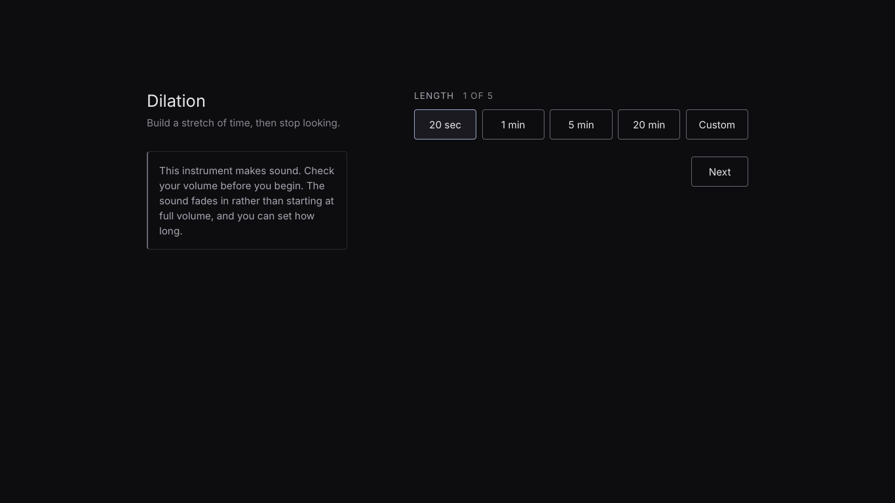
Design scenario
Scenario 4: Sonic Timer
Prompt. Design a way for users to relate to time using audio. This relation does not have to be quantitative measurement.
Context. Clocks of various types are usually the instrument most strongly related to measuring regular intervals of time such as seconds, minutes and hours. Audio may instead be used to measure different intervals or otherwise change a user's experience of time, such as breaths in a period or meditation, or hold music while waiting on the phone.
The design scenario provided in the course brief.
How Dilation responds
Purpose. Let the user set aside a period of time without having to look at it, and let them decide what that time sounds like before it starts.
Worth.
- Let users keep their attention instead of spending it on the screen
- Let time be felt as something closer to art, elegant rather than a number going down
- Let the ending come slowly instead of abruptly
- Make each session belong to the person who built it, rather than a preset everyone else gets
Dilation answers the prompt directly. You relate to time purely through audio: you can hear when a session starts, where the middle is and when it ends. I could have designed something that reads out the time, like counting every second or every minute, but that would be too simple. Dilation is a calm, relaxing way of doing it.
It changed a lot from my Assignment 1 plan after peer testing. The first prototypes weren't as polished as this, but peer user testing was extremely useful. Before doing it, I thought it might not be that important and I just had to make my own polished version. After the feedback and the answers to my questions, I know it's extremely important. I now know how most users feel and what they missed, such as the tooltips, along with changes they wanted on the setup and session screens.
What peer testing changed
Twelve classmates tried all six prototypes from Assignment 2 on 1 October. These results decided what went into the final version.
| Question | Result | What went in |
|---|---|---|
| Easiest layout to understand | One at a time 6, Pad 4, Stacked 2 | Setup in five steps |
| Layout enjoyed most | Pad 8, One at a time 3, Stacked 1 | The pad became the Tone step |
| Did hearing the pad make choosing easier? | Yes 7, Neutral 3, No 2 | Voices play a sample too |
| Noticed the ending with eyes closed | Countdown 9, Bell 4, Chimes 1 | A glow added to the bell |
| Most comfortable ending | Bell 8, Chimes 3, Countdown 1 | The bell |
| Numbers at the end made it | Worse 6, No difference 4, Better 2 | Still no numbers |
Core interactive features
Dilation has two screens, setup and session. JavaScript makes the sound with Tone.js (Mann n.d.), keeps time with Temporal, and sets one attribute on the page, data-state, to idle, running or ending. CSS reads that attribute and changes the screen to match (main.js, lines 41 to 44).
Setup in five steps
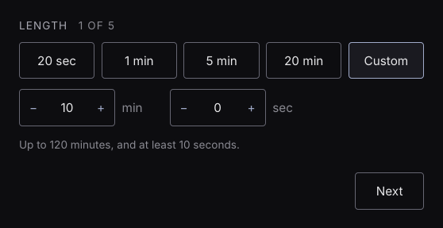
The setup asks five questions, one at a time: length, voice, tone, fades and volume. Each step is its own section, and Next and Back are plain links to the next section's address, so CSS shows whichever step is in the address bar using :target. A counter shows which step you're on. Begin only appears on the last step, and pressing Enter can't skip ahead.
I picked one step at a time because peer testing showed it was the easiest layout to understand, and it gives the user more time and focus on each step. If you only show one step at a time, people focus solely on that step. If you show all five at once, they spend less time on each one.
Voices you can hear before you pick
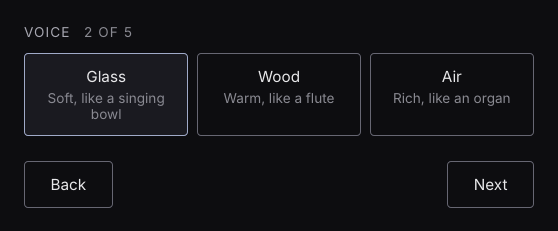
There are three voices, Glass, Wood and Air. Each one is a different waveform, so they sound clearly different at the same pitch. Picking a voice plays a short sample of it for about a second and a half, at your tone settings. Picking another one fades the first out so they don't pile up (main.js, lines 166 to 203).
The voices have descriptions and samples so users can choose what they like instead of going in blind. A description only gets them part of the way, but a sample is the closest thing to the real session.
The tone pad
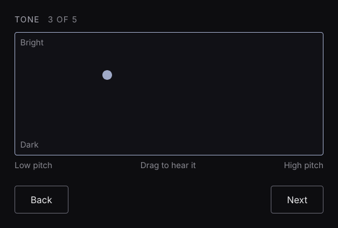
The pad sets two things at once. Left to right is pitch, from 65 to 165 Hz, and top to bottom is brightness, which opens or closes a filter on the sound. While you hold the pad you hear a quiet preview that follows the dot, so you hear the session before it starts. The arrow keys move the dot too, with the same preview (main.js, lines 62 to 71).
I chose a pad over buttons because you can make much smaller adjustments with it. Buttons only give you a few options, but on a pad you can land anywhere, so it's more accurate. It's also more fun. You get to move around, instead of the setup screen being filled with buttons.
Fades and volume
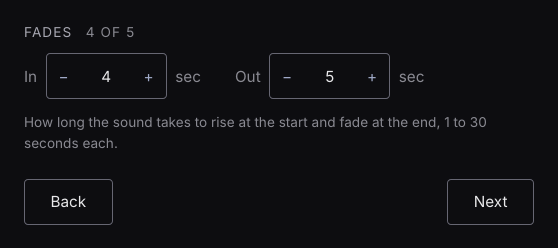
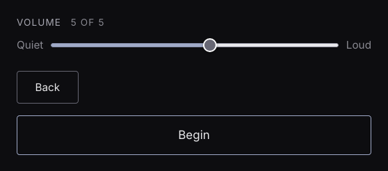
You choose how long the sound takes to rise at the start and fade at the end, from 1 to 30 seconds each, and how loud it plays. The sound never starts at full volume. The screen fades to black over the same time as the sound, so the two end together.
Setting the fades and volume before the session is about customisation and preference. Some people prefer a longer fade, while others prefer a shorter, quicker ending. Volume is the same. Some like it loud and some like it quiet.
Quick start
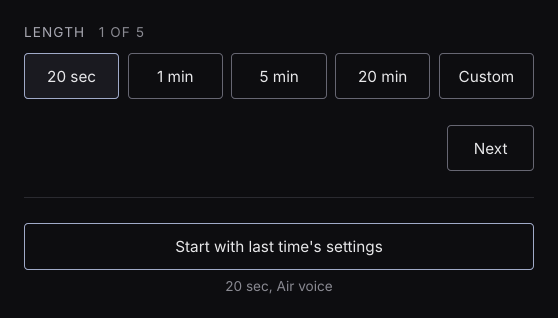
Your choices are saved in the browser when a session starts, and put back next time, including the dot on the pad. Once there's a saved session, the first step shows a button to start straight away with last time's settings, with a summary under it. Nothing leaves your browser, and there's no account (main.js, lines 129 to 164).
The quick start means users don't have to set everything up again. They can start with one click, which is easier and faster. It's basically a quality of life improvement.
The session
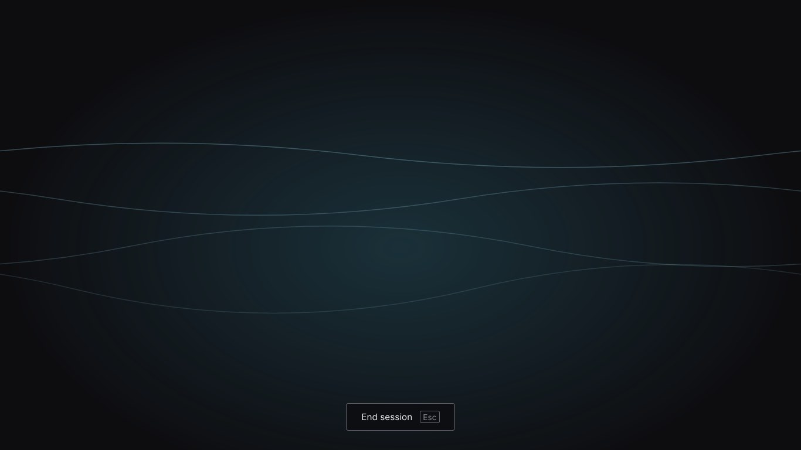
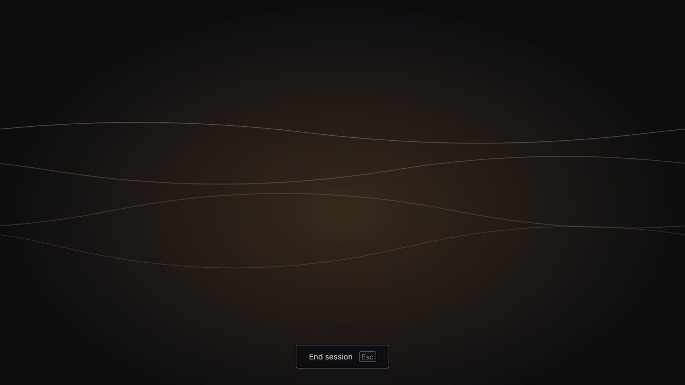
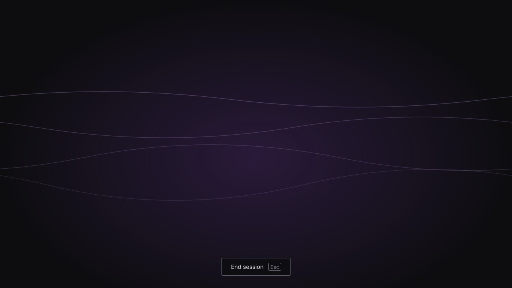
The sound moves through three phases. For the first fifth it's sparse and low while you settle. Through the middle a filter opens and higher notes fade in, so it gets fuller and warmer. In the last quarter it thins out and lifts in pitch by just under a semitone, so you feel it closing before it closes (main.js, lines 259 to 289).
The screen shows four slow waves in the colour of your voice: blue for Glass, amber for Wood and violet for Air. They drift and bob but carry no information about time. After 30 seconds the waves and the End button dim. Hovering over End brings it back, and Escape ends the session at any time.
The session screen shows no time because that would go against what I'm making. It dims so it stays calm and doesn't feel like a timer. When someone is meditating or resting and an alarm goes off, it comes as a surprise and pulls them out of it. Dilation doesn't distract you at all.
The ending
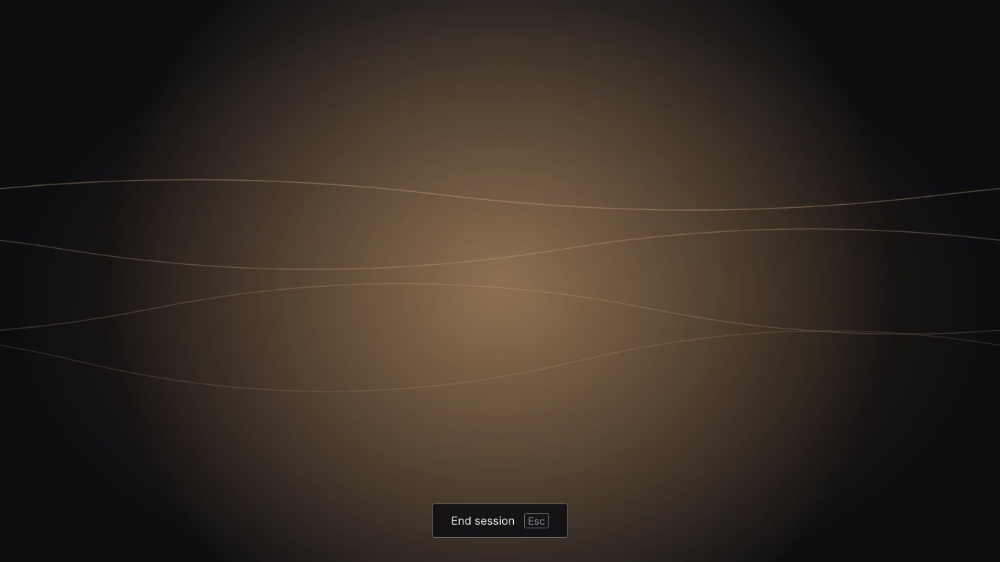
When the time runs out, a soft bell rings two octaves above the drone, so it's in tune with whatever pitch you picked. At the same time a warm glow blooms in the middle of the screen and fades over four seconds, while the sound and the screen fade out together. When the fade finishes you're back at the setup. Ending early with End or Escape fades out without the bell, so the bell always means the time is up (main.js, lines 291 to 308).
A bell is clearer than chimes, and in peer testing the bell was the most comfortable ending and the one most people picked. The glow came from testing too. Only 4 of 12 testers clearly noticed the bell with their eyes closed, and the countdown was the clearest but felt worse because of the numbers. The glow makes the ending clearer without showing a number.
All these features are combined to make a calm atmosphere.
If the sound can't start
Browsers only allow sound after a click. If the sound still hasn't started 3 seconds after Begin, Dilation goes back to the setup with a message instead of leaving you on a silent screen (main.js, lines 79 to 84).
Extended technique: Temporal
Temporal is JavaScript's newer way of working with dates and times. It has separate objects for an exact moment (Temporal.Instant) and a length of time (Temporal.Duration) (MDN 2026). Dilation uses both to run the session clock.
How Dilation uses it
1. The session length is a Duration. Presets and custom lengths both become a Temporal.Duration. A custom length shorter than 10 seconds is raised to 10 seconds by comparing two Durations (main.js, lines 342 to 357).
totalDuration = Temporal.Duration.from({ minutes, seconds });
const shortest = Temporal.Duration.from({ seconds: 10 });
if (Temporal.Duration.compare(totalDuration, shortest) < 0) {
totalDuration = shortest;
}2. The start is an Instant. When the sound starts, Temporal.Now.instant() records the exact moment.
3. Progress is read fresh from the clock. Four times a second, Dilation asks how much time has passed since the start and divides it by the length. That gives a number from 0 to 1, which sets the phase of the sound and rings the bell at 1 (main.js, lines 253 to 257).
function getProgress() {
const elapsed = Temporal.Now.instant().since(startInstant);
return Math.min(1, elapsed.total("milliseconds") / totalDuration.total("milliseconds"));
}Because progress comes from the clock and not from counting ticks, it can't drift. Browsers slow timers down in background tabs, but a slow tick still reads the right time when it arrives, so the session ends on time even if you switch tabs.
I could have picked any of the extended techniques. I'm a very indecisive person and could spend days choosing, so I picked Temporal and committed to it. It ended up suiting Dilation well, because the whole instrument depends on knowing exactly how far through the session you are.
Browser support
Firefox has had Temporal built in since version 139 and Chrome since version 144 (Bryntum 2026). For older browsers and Safari, the page loads a small polyfill that adds it (temporal-polyfill). If neither works, Begin is switched off and a message explains why.
Design system
Every colour, font size, gap and timing in Dilation is a named token, set once at the top of the stylesheet and used by name everywhere else (style.css, lines 5 to 53). Changing a token changes every part of the instrument that uses it.
I wanted Dilation to feel calm. The screen is dark, nothing is bright, and there are no flashing lights to distract the user. Where there is light, like the bell's glow, it fades in and out, and all the animations are smooth.
Colour
The setup is dark and nearly colourless, so nothing competes with the sound. Contrast is measured against the background, #0d0d10. WCAG asks for at least 4.5:1 for text and 3:1 for the edges of controls (W3C 2023).
| Token | Colour | Used for | Contrast |
|---|---|---|---|
--text | #e8e8ea | Main text, buttons | 15.9:1 |
--text-soft | #a8a8b2 | Step names, the volume notice | 8.2:1 |
--text-muted | #8a8a92 | Hints, labels, step counter | 5.7:1 |
--accent | #a0aac8 | Selected option, focus ring, Begin, pad dot | 8.4:1 |
--line-control | #666672 | Edges of buttons, fields and the pad | 3.4:1 |
--line-hover | #8a8a96 | Edges on hover | 5.7:1 |
--line | #2a2a30 | Dividers only, never a control | 1.4:1 |
--warning | #cc8888 | Error messages | 6.9:1 |
Colour only appears once the session starts, and it comes from your choice. Each voice has a hue, Glass 195 (blue), Wood 30 (amber) and Air 270 (violet), which JavaScript passes to CSS as --hue for the wash and the waves. The bell's glow is a warm white so it stands out from all three.
Typography
Dilation uses the system font, so it looks at home on any computer and loads instantly. There are three sizes: title 1.5rem, body 0.9rem and small 0.8rem. Step names are in capitals with wide spacing, so they read as labels rather than content. Every size is in rem, so if someone sets a bigger default font size in their browser, the whole instrument grows with it.
Spacing and shape
All gaps and padding come from one scale: 0.25, 0.5, 0.75, 1, 1.5, 2, 3, 4 and 6rem. Every button and field uses the same padding, so they're all the same height, at least 43px, well above the 24px minimum target size in WCAG 2.2. Corners are a 4px radius throughout.
Motion
| Movement | Time | Why that speed |
|---|---|---|
| Hover and selection | 150ms (--motion-quick) | Fast enough to feel instant |
| Changing step | 400ms (--motion-step) | A soft fade so each step feels like the next page |
| Back to the setup | 800ms (--motion-screen) | Slower, after a session ends |
| Waves drifting | 38 to 70s per loop | Too slow to follow, so they can't be read as a clock |
| Dimming | after 30s (--dim-after) | The screen gets less interesting the longer you stay |
| Bell glow | 4s | Fades with the bell's ring |
| Final fade | Your fade out time | Screen and sound end together |
If someone has reduced motion turned on in their system settings, the waves stay still and the setup and its steps appear without fading in (style.css, lines 671 to 701).
Layout across screen sizes
The setup has a layout for each of the four screen widths (style.css, lines 463 to 531). The session screen fills any screen, because the waves are sized to the window.
| Size | Width | What changes |
|---|---|---|
| Medium | under 840px | One column, 30rem wide, title and notice above the step |
| Expanded | 840 to 1199px | The column widens to 34rem and the pad gets taller |
| Large | 1200 to 1600px | The title and notice move beside the steps, so each step sits near the top and the volume notice stays in view. Text grows to 17px |
| Extra-large | over 1600px | Wider columns, a taller pad, and text grows to 18px for bigger screens seen from further away |
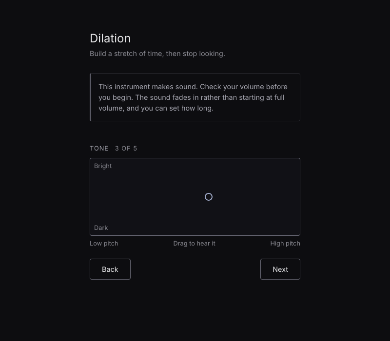
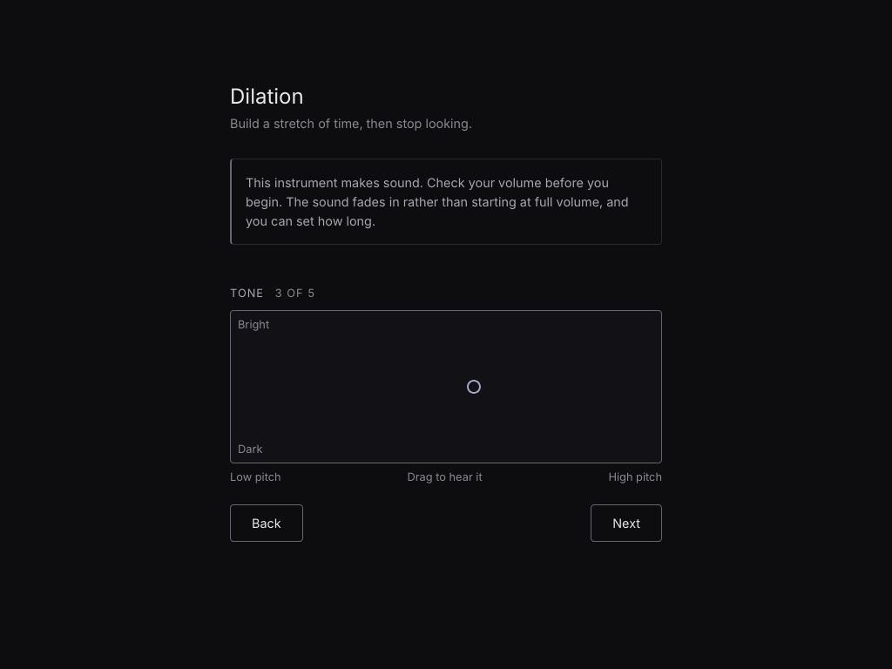
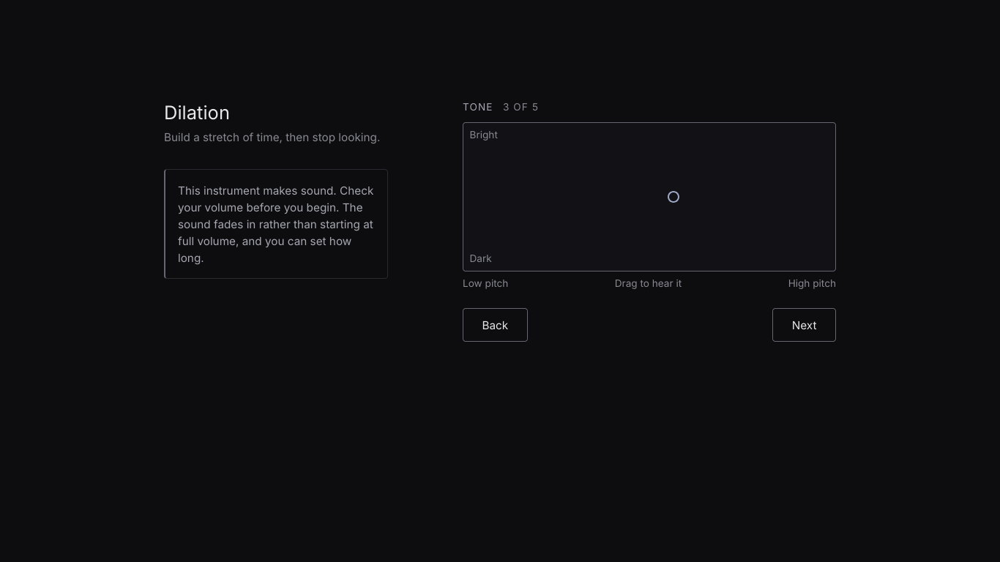
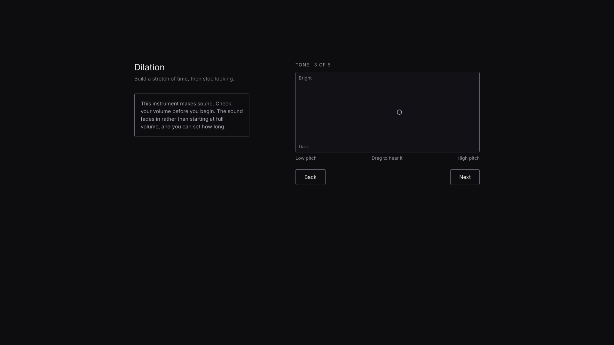
Accessibility
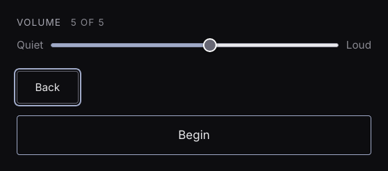
- Contrast. All text passes 4.5:1 and every control edge passes 3:1. If someone turns on more contrast in their system settings, text and edges get brighter again.
- Keyboard. Everything works without a mouse. Tab and Enter move through the steps, the arrow keys move the pad and change numbers, and Escape ends a session. One focus ring with a small gap is used for everything.
- Screen readers. A hidden status message says when a session starts, with its length, voice and how to end it, when the time is up, and when you're back at the setup. Moving to a new step puts focus on it so its name is read out (main.js, lines 46 to 55).
- No hover-only information. Voice descriptions and hints are always on screen, and the hints are linked to their fields so screen readers read them too.
- Sound. A notice before you start says the page makes sound, every session fades in, and the volume is set before the sound begins.
- Motion. With reduced motion on, the waves stay still and the steps don't fade in.
Feedback
- On screen. Hovered options get a brighter edge, the selected option gets the accent edge and a lighter fill, and the pad lights up while you hold it.
- In sound. Picking a voice plays it, and holding the pad plays the tone, so choices are heard as soon as they're made.
- At the end. The bell and the glow mark the end for both ears and eyes, and the End button changes to "Ending" while the sound fades.
Browsers
Dilation was tested in Firefox and Chrome at 800, 1024, 1366 and 1920px wide, checking every step at each width, with full sessions run with sound in both browsers. The number fields used to have custom arrows that only Chrome understood, so Firefox showed its own small grey ones. They're now real minus and plus buttons, drawn the same in both browsers.
| Feature | Firefox | Chrome |
|---|---|---|
| Temporal | Built in since version 139 | Built in since version 144, older versions use the polyfill |
| Number field arrows | Own minus and plus buttons | Own minus and plus buttons |
Steps and Custom fields (:target, :has()) | Works | Works |
| Sound starting | Starts on the first click | Starts on the first click |
Commit log
The final version is the main branch of the Dilation repository. After peer testing, the Pad, One at a time and Bell prototypes were merged into main, so their commits are part of this log too.
Commit log (42 commits)
| Author | Date | Subject | Body |
|---|---|---|---|
| SoleyatRmit | Sun Oct 25 13:14:08 2026 +0700 | Added screen reader | |
| SoleyatRmit | Sun Oct 25 00:12:53 2026 +0700 | Screen widths | Made four layouts for screen widths. The set up screen now scales with the screen widths (Medium, expanded, large and extra large). |
| SoleyatRmit | Sat Oct 24 20:36:53 2026 +0700 | Made the number arrows work in Firefox | -webkit-inner-spin-button doesn't work in Firefox so it's been replaced with plus and minus buttons. |
| SoleyatRmit | Sat Oct 24 20:03:45 2026 +0700 | Replaced tooltips with hints | Peer testing showed that no one found out that hovering above anything will show tooltips so it's been replaced with hints. |
| SoleyatRmit | Sat Oct 24 13:44:59 2026 +0700 | Improved readability | made text and edges easier to see, I used Claude and read WCAG website for this. |
| SoleyatRmit | Sat Oct 24 13:15:39 2026 +0700 | Update style.css | Design tokens. Make sure everything is clean and easier for others to read. |
| SoleyatRmit | Fri Oct 23 00:30:03 2026 +0700 | Color session screen | Added colors to session screen for different voices. |
| SoleyatRmit | Sat Oct 10 07:41:14 2026 +0700 | Added glow when bell rings | In testing only 4 out of 12 clearly notice the bell and countdown was voted as the clearest but felt worse because of the numbers. So I'm adding a visual cue (glow) to the bell instead of a countdown. |
| SoleyatRmit | Sat Oct 10 05:07:31 2026 +0700 | Quick start | one tester said the steps help you learn but they wouldn't want to do it every time so I added a quick start option. |
| SoleyatRmit | Fri Oct 9 21:51:40 2026 +0700 | Remember settings | choices saved in browser |
| SoleyatRmit | Fri Oct 9 21:23:59 2026 +0700 | Added voice preview | Many testers like the pad preview so I added preview to the voice too. |
| SoleyatRmit | Fri Oct 9 20:14:26 2026 +0700 | Showed voice descriptions | Two testers asked what each voice sounds like. They were hidden in hover tooltips but I guess that was hard to discover so I added description under each voice instead. |
| SoleyatRmit | Fri Oct 9 16:36:38 2026 +0700 | Added error message if the sound can't start | Wait 3 seconds and if no sound then it goes back to set up screen with a message. |
| SoleyatRmit | Fri Oct 9 12:10:51 2026 +0700 | Merge branch 'LayoutTwo' | |
| SoleyatRmit | Fri Oct 9 12:09:15 2026 +0700 | Merge branch 'LayoutThree' | |
| SoleyatRmit | Tue Sep 29 10:12:55 2026 +0700 | Bell only rings when time runs out | The bell now only rings when the time naturally runs out. The bell won't ring when the user manually ends the session anymore. |
| SoleyatRmit | Tue Sep 29 09:09:37 2026 +0700 | Gave the bell some reverb | |
| SoleyatRmit | Tue Sep 29 09:01:21 2026 +0700 | Bell tuning | Bell sound now also follow the tune settings. |
| SoleyatRmit | Tue Sep 29 08:51:43 2026 +0700 | Update main.js | The bell volume now scales with the volume slider. |
| SoleyatRmit | Tue Sep 29 08:47:22 2026 +0700 | Added a bell sound at the end of every session | |
| SoleyatRmit | Mon Sep 28 20:41:33 2026 +0700 | Added arrow keys support for the pad | |
| SoleyatRmit | Mon Sep 28 20:17:02 2026 +0700 | Labelled the pad | |
| SoleyatRmit | Mon Sep 28 19:51:30 2026 +0700 | Update main.js | Added feature where you can hear the preview while dragging on the pad. Claude helped a lot with this part. |
| SoleyatRmit | Mon Sep 28 19:22:56 2026 +0700 | Update main.js | Added brightness to the pad, so y level for brightness and x level for pitch. |
| SoleyatRmit | Mon Sep 28 19:03:18 2026 +0700 | Making the Pad functional | Making it draggable and continuing with the coding. Claude helped a lot with this. |
| SoleyatRmit | Mon Sep 28 18:51:27 2026 +0700 | Replaced tuning with a pad | Added a pad and removed the previous tuning buttons. Backend is not there yet so it's not working. |
| SoleyatRmit | Mon Sep 28 18:29:28 2026 +0700 | Update index.html | Fixed a bug where pressing Enter would skipped all the other pages and starts the session. Claude found this bug and fixed it too. |
| SoleyatRmit | Mon Sep 28 18:25:14 2026 +0700 | Update style.css | Added fade animation to the steps too |
| SoleyatRmit | Mon Sep 28 18:20:57 2026 +0700 | Page counter | Added page counter to see what page you're on and how many are left. |
| SoleyatRmit | Mon Sep 28 18:13:53 2026 +0700 | Update style.css | Style the next and back buttons. Make it match with the rest of the website. |
| SoleyatRmit | Mon Sep 28 17:51:33 2026 +0700 | Update index.html | Move Begin button to the last step |
| SoleyatRmit | Mon Sep 28 17:49:26 2026 +0700 | Show one setting at a time part 2 | Continuing the coding and added next and back buttons. |
| SoleyatRmit | Mon Sep 28 17:29:39 2026 +0700 | Show one setting at a time | Make CSS show the settings in the address bar and if nothing is there then start at length (first step). |
| SoleyatRmit | Mon Sep 28 16:33:13 2026 +0700 | Arrows spacing | Spaced out the up and down arrows so it fits with the rest of the website. |
| SoleyatRmit | Mon Sep 28 16:29:13 2026 +0700 | Update the style of the up and down arrow keys | Claude helped with the background line. |
| SoleyatRmit | Mon Sep 28 16:15:10 2026 +0700 | Added a favicon | Claude helped with this but I came up with the wave design. |
| SoleyatRmit | Mon Sep 28 16:09:36 2026 +0700 | Added Esc function to end the session | |
| SoleyatRmit | Mon Sep 28 16:06:04 2026 +0700 | Pitch lift at the end of session | |
| SoleyatRmit | Mon Sep 28 15:59:04 2026 +0700 | Update style.css | Added hover animations on the set up page. |
| SoleyatRmit | Mon Sep 28 15:49:43 2026 +0700 | Fixed volume slider | Fix the slider and made it longer. |
| SoleyatRmit | Mon Sep 28 15:35:04 2026 +0700 | Added a volume slider | Volume slider at the bottom of the set up page |
| SoleyatRmit | Mon Sep 28 14:12:59 2026 +0700 | Uploaded Prototype |
References
Ableton n.d., Learning Synths, viewed 12 August 2026, <https://learningsynths.ableton.com/>.
Bryntum 2026, JavaScript Temporal in 2026: is it finally here?, Bryntum, viewed 25 October 2026, <https://bryntum.com/blog/javascript-temporal-is-it-finally-here/>.
Encyclopaedia Britannica 2026, Time dilation, Encyclopaedia Britannica, viewed 12 August 2026, <https://www.britannica.com/science/time-dilation>.
Mann, Y n.d., Tone.js, viewed 25 October 2026, <https://tonejs.github.io/>.
MDN 2026, Temporal, MDN Web Docs, Mozilla, viewed 25 October 2026, <https://developer.mozilla.org/en-US/docs/Web/JavaScript/Reference/Global_Objects/Temporal>.
W3C 2023, Web Content Accessibility Guidelines (WCAG) 2.2, World Wide Web Consortium, viewed 24 October 2026, <https://www.w3.org/TR/WCAG22/>.